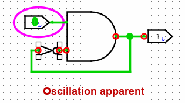

שגיאות תנודה
אלגוריתם ההפצה, שבדרך כלל פועל בשקט ללא בעיות, יהפוך לגלוי מאוד כאשר אתה ליצור מעגל שמתנודד.

מעגל זה נמצא כעת במצב יציב. אבל אם תשנה את הקלט ל-1, המעגל יעשה זאת ביעילות להיכנס ללולאה אינסופית. לאחר זמן מה, לוגיסים פשוט תוותר ותציג הודעת "תנודה לכאורה". אומר לך שהוא מאמין שהמעגל מתנודד.

זה יציג את הערכים שיש לו בזמן שהוא מוותר. ערכים אלה ייראו שגויים - בצילום מסך זה, שער ה-AND פולט 1 למרות שאחת מהכניסות שלו היא 0, אבל יכול להיות שלשער NOT יש כניסת 1 ו פלט 1.
לוגיסים מקיף באדום באדום כל מיקום שנראה כמעורב בתנודה. אם מעורב הנקודה נמצאת בתוך תת-מעגל, לוגיסים יצייר את קווי המתאר של תת-המעגל באדום.
כאשר Logisim מזהה תנודה, היא משביתה כל סימולציה נוספת. אתה יכול להפעיל מחדש סימולציה באמצעות תפריט | הדמיה |→| הדמיה מופעלת |.
Logisim מזהה תנודה באמצעות טכניקה פשוטה למדי: אם הדמיית המעגל נראית לאיטרציות רבות, אז הוא פשוט יוותר וידווח על תנודה. (הנקודות שהוא מזהה כמעורבות הן אלו נגעו ב-25% האחרונים מהאיטרציות.) לפיכך, הוא יכול לדווח בטעות על תנודה, במיוחד אם אתה עובד עם מעגל גדול במיוחד; אבל זה יהיה אחד גדול יותר מכל מה שבניתי באמצעות Logisim. בכל מקרה, אם אתה בטוח שהדיווח שגוי, תוכל להגדיר את המספר של איטרציות שהושלמו לפני שהתנודה מתרחשת דרך חלון אפשרויות הפרויקט כרטיסיית סימולציה.
הבא: חסרונות.